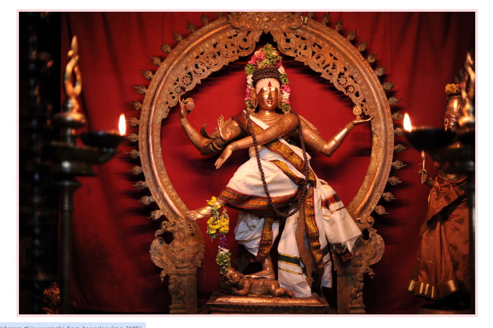

Thillai natarajar Temple Spread across 40 acres, with four tall gopurams (gateway towers). Contains five sabhas (halls) where different rituals and festivals happen. Represents Dravidian temple architecture at its finest. Shiva killed the tiger (wearing its skin), tamed the serpent, and crushed the demon under his foot. Then he performed the Ananda Tandava (cosmic dance of bliss) in the forest. The sages realized their ego and surrendered. This place became Chidambaram, the site of the eternal dance. 